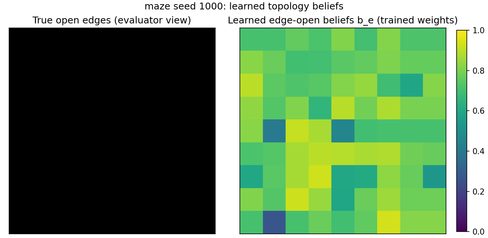

CAVR pays a credible success-rate cost once the world is static again (G2 verdict PARTIAL): e.g. blocking ρ=0.3 success 0.445 vs D* Lite 0.726.
with a true map oracle it is faster and near-perfect; CAVR is the right tool only when walls must be learned, not given.
under MAP beliefs two of 81 cells stay unreachable from the start after the blocking event; the detector repairs visited corridors, not every pocket.

Learned edge-open beliefs for maze 1000. The left evaluator-view panel renders blank in the shipped artifact — a known plotting defect we ship as-is rather than disguise.